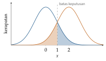
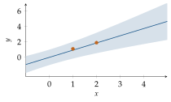

Bab 2
Memilih Model dengan Statistik dan Bayes
Pada musim dingin 2025/26 saya mengikuti kuliah Machine Learning: Basic Techniques dari Sepp Hochreiter, kuliah yang namanya “dasar” tetapi dalam perjalanan saya datang setelah sebagian besar kuliah lanjut. Naskahnya dibuka dengan satu klaim yang terus diulang sampai halaman terakhir: inti machine learning adalah model selection. Memilih arsitektur, memilih fungsi loss, memilih regularisasi, bahkan memilih cara meringkas data sebelum memodelkannya, semuanya adalah memilih model, dan setiap pilihan itu menyimpan asumsi tentang dunia. Bab ini mengikuti alur naskah itu. Ia melengkapi Bab 1 dengan sisi statistik yang lebih klasik, yang sering terlewat ketika orang langsung melompat ke jaringan saraf.
Deduktif dan induktif
Naskah kuliah membedakan dua cara membangun model. Model deduktif diturunkan dari prinsip pertama: hukum Newton, persamaan Navier–Stokes, aturan yang ditulis ahli. Model induktif dibangun dari contoh: kita memilih sebuah keluarga model, lalu data menentukan anggota keluarga mana yang dipakai. Machine learning adalah pembangunan model induktif. Bab-bab tentang simulasi di bagian akhir buku ini pada dasarnya adalah cerita tentang mempertemukan kedua cara itu.
Keluarga model sendiri bisa parametrik atau nonparametrik. Model parametrik punya jumlah parameter tetap, berapa pun datanya, seperti regresi linear atau jaringan saraf berukuran tertentu. Model nonparametrik tumbuh bersama data, seperti \(k\)-nearest neighbour yang menyimpan semua contoh atau penaksir kerapatan kernel di bawah. Model parametrik kuat ketika asumsinya benar dan berbahaya ketika salah. Model nonparametrik lebih lentur, dengan harga butuh data lebih banyak.
Meringkas data sebelum memodelkan
Naskah kuliah menghabiskan satu bab penuh untuk hal yang tampak sepele: meringkas dan menggambar data. Contohnya data bunga iris milik Anderson dan data microarray dari beberapa jaringan tubuh. Alasannya sederhana. Ringkasan yang salah memberi gambaran yang salah, dan model yang dibangun di atas gambaran yang salah tidak akan menjadi benar karena arsitekturnya canggih.
Pusat dan sebaran
Rata-rata, median, dan modus sama-sama mengukur pusat, tetapi bereaksi berbeda terhadap pencilan. Lima gaji bulanan, dalam juta rupiah, \(3\), \(4\), \(4\), \(5\), dan \(100\), punya rata-rata \(23{,}2\) dan median \(4\). Satu angka ekstrem menarik rata-rata jauh dari tempat sebagian besar data berada, sedangkan median nyaris tidak terganggu. Median disebut robust: setengah data harus dirusak sebelum median bisa digeser sembarang jauh, sedangkan untuk rata-rata, satu titik saja sudah cukup.
Untuk sebaran, varians sampel bisa dihitung dengan pembagi \(N\) atau \(N-1\). Pembagi \(N\) memberi penaksir yang bias. Alasannya, simpangan dihitung terhadap rata-rata sampel, bukan rata-rata sejati, dan rata-rata sampel selalu terletak tepat di tengah data itu sendiri, sehingga jumlah kuadrat simpangannya selalu sedikit lebih kecil dari seharusnya. Menghitung nilai harapannya memberi \(\mathbb{E}\big[\tfrac1N\sum(x_i-\bar x)^2\big]=\tfrac{N-1}N\sigma^2\), dan membagi dengan \(N-1\) menghapus bias itu. Tetapi naskah kuliah menunjukkan sesuatu yang lebih halus. Untuk data Gauss, penaksir yang bias justru punya galat kuadrat rata-rata yang lebih kecil, karena variansnya sendiri lebih kecil, dan pengurangan varians itu lebih besar dari tambahan bias kuadratnya. Tak bias tidak sama dengan terbaik. Inilah tawar-menawar bias dan varians dari Bab 1, dalam bentuk yang paling kecil.
Pilihan antara rata-rata dan median juga bergantung pada distribusinya. Kalau data berdistribusi Gauss, varians rata-rata sampel adalah \(\sigma^2/N\), sedangkan varians median sampel kira-kira \(\tfrac\pi2\,\sigma^2/N\), sekitar 57 persen lebih besar. Untuk data Gauss, rata-rata adalah penaksir pusat yang lebih baik. Kalau data berdistribusi Laplace, yang ekornya lebih tebal, keadaannya terbalik: varians median sampel hanya \(\sigma^2/(2N)\), separuh varians rata-rata. Tidak ada penaksir yang terbaik untuk semua keadaan. Yang ada hanya penaksir yang cocok untuk asumsi tertentu.
Menggambar data
Boxplot meringkas satu variabel dengan lima angka. Kotaknya membentang dari kuartil pertama ke kuartil ketiga, garis di dalamnya adalah median, dan kumis memanjang sampai titik data terjauh yang masih berada dalam \(1{,}5\) kali jarak antarkuartil dari kotak. Titik di luar itu digambar sendiri sebagai calon pencilan. Boxplot per kelas pada data iris langsung memperlihatkan bahwa panjang mahkota bunga memisahkan spesies jauh lebih baik dari panjang kelopaknya, sebelum satu model pun dilatih.
Histogram bergantung pada lebar dan letak kotak-kotaknya, sehingga bentuknya bisa berubah hanya karena kotaknya digeser. Penaksir kerapatan kernel menghaluskannya dengan meletakkan sebuah kernel, biasanya Gauss, di setiap titik data dan menjumlahkannya, \[\hat p(x)=\frac1{Nh}\sum_{i=1}^NK\Big(\frac{x-x_i}h\Big).\] Lebar pita \(h\) memainkan peran yang sudah kita kenal. Pita yang terlalu sempit membuat setiap titik data menjadi puncak sendiri, overfitting. Pita yang terlalu lebar meratakan dua puncak menjadi satu, underfitting. Violin plot menggabungkan boxplot dengan kerapatan kernel yang dicerminkan, sehingga bentuk distribusi dan ringkasan lima angkanya terlihat sekaligus.
Korelasi dan bahaya angka tunggal
Koefisien korelasi Pearson mengukur seberapa linear hubungan dua variabel. Untuk menguji apakah korelasi sampel \(r\) dari \(N\) pasangan berbeda nyata dari nol, dengan asumsi kedua variabel berdistribusi normal, dipakai statistik \[t=r\sqrt{\frac{N-2}{1-r^2}},\] yang mengikuti distribusi Student-\(t\) dengan \(N-2\) derajat kebebasan. Naskah kuliah memakai kuartet Anscombe (Anscombe 1973), empat himpunan data berisi sebelas titik yang punya rata-rata, varians, korelasi, dan garis regresi yang hampir sama persis. Untuk himpunan pertama, \(r\approx0{,}816\) dan \(t=0{,}816\sqrt{9/0{,}334}\approx4{,}24\), dengan nilai \(p\) satu sisi sekitar \(0{,}001\). Tetapi ketika digambar, keempatnya sama sekali berbeda: satu awan titik yang wajar, satu kurva lengkung yang sempurna, satu garis lurus dengan satu pencilan, dan satu kolom titik dengan satu titik jauh yang sendirian menciptakan seluruh korelasinya. Angka ringkasan yang sama bisa berasal dari dunia yang jauh berbeda. Gambarlah data sebelum mempercayai angkanya.
Loss sebagai asumsi noise
Di Bab 1 kita menurunkan galat kuadrat dari asumsi noise Gauss. Naskah kuliah melanjutkannya ke noise lain. Kalau noise berdistribusi Laplace, \(p(\epsilon)\propto e^{-\beta|\epsilon|}\), log likelihood negatifnya sebanding dengan \(\sum|y_i-\hat y_i|\), galat mutlak. Secara umum, noise dengan kerapatan \(\propto e^{-\beta|\epsilon|^r}\) menghasilkan galat Minkowski \(\sum|y_i-\hat y_i|^r\). Pilihan \(r\) adalah pilihan seberapa tebal ekor noise yang kita percayai.
Hubungan antara loss dan penaksir pusat bisa diturunkan dalam beberapa baris. Cari satu konstanta \(c\) yang mewakili data \(y_1,\dots,y_N\). Untuk galat kuadrat, turunan \(\sum(y_i-c)^2\) terhadap \(c\) adalah \(-2\sum(y_i-c)\), yang nol tepat ketika \(c\) adalah rata-rata. Untuk galat mutlak, turunan \(\sum|y_i-c|\) adalah banyaknya titik di bawah \(c\) dikurangi banyaknya titik di atas \(c\), karena setiap titik menyumbang \(+1\) atau \(-1\). Turunan itu nol ketika titik di bawah dan di atas sama banyak, yaitu ketika \(c\) adalah median. Galat kuadrat menghasilkan rata-rata, galat mutlak menghasilkan median, dan kita sudah melihat bahwa median tahan terhadap pencilan. Jadi memilih loss L1 untuk regresi berarti memilih model yang tidak mudah ditarik oleh beberapa pengukuran yang rusak. Untuk data gaji di atas, model L2 akan meramal \(23{,}2\), model L1 meramal \(4\).
Batas bawah galat: klasifikasi Bayes
Seberapa baik sebuah pengklasifikasi bisa bekerja? Kalau distribusi data diketahui, jawabannya bisa dihitung. Pengklasifikasi yang memilih kelas dengan peluang posterior tertinggi, \(\operatorname*{arg\,max}_yp(y\mid\boldsymbol{x})\), mencapai risiko serendah mungkin, dan risiko itu disebut galat Bayes. Tidak ada model, berapa pun besarnya, yang bisa lebih baik dari ini, karena di daerah tempat kedua kelas tumpang tindih, informasi untuk membedakannya memang tidak ada.
Naskah kuliah menghitungnya untuk dua kelas yang masing-masing berdistribusi Gauss. Log rasio kedua posterior adalah \[\ln\frac{p(y=1\mid\boldsymbol{x})}{p(y=-1\mid\boldsymbol{x})}= -\tfrac12(\boldsymbol{x}-\boldsymbol\mu_1)^\top\boldsymbol\Sigma_1^{-1}(\boldsymbol{x}-\boldsymbol\mu_1)+\tfrac12(\boldsymbol{x}-\boldsymbol\mu_{-1})^\top\boldsymbol\Sigma_{-1}^{-1}(\boldsymbol{x}-\boldsymbol\mu_{-1}) +\text{konstanta}.\] Kalau kedua kovarians sama, suku kuadrat \(\boldsymbol{x}^\top\boldsymbol\Sigma^{-1}\boldsymbol{x}\) dari kedua kelas saling menghapus, dan yang tersisa linear dalam \(\boldsymbol{x}\), dengan arah \(\boldsymbol\Sigma^{-1}(\boldsymbol\mu_1-\boldsymbol\mu_{-1})\), arah yang sama dengan analisis diskriminan Fisher di Bab 6. Batas keputusannya adalah bidang datar. Kalau kovariansnya berbeda, suku kuadrat tidak terhapus, dan batasnya menjadi permukaan kuadrat, misalnya hiperbola atau elips, seperti yang digambarkan naskah kuliah. Model yang dipilih untuk batas keputusan, linear atau kuadrat, adalah asumsi tentang kovarians kelas.
Dalam satu dimensi, galat Bayes bisa dihitung dengan tangan (Gambar 2.1). Dua kelas dengan peluang sama, \(\mathcal{N}(0,1)\) dan \(\mathcal{N}(2,1)\), punya batas keputusan di tengah, \(x=1\). Kesalahan terjadi ketika contoh dari kelas pertama jatuh di atas 1 atau contoh dari kelas kedua jatuh di bawah 1. Masing-masing berpeluang \(\Phi(-1)\approx0{,}159\), dengan \(\Phi\) fungsi distribusi kumulatif normal baku, sehingga galat Bayes sekitar 16 persen. Kalau jarak kedua rata-rata dua kali lipat, galatnya turun menjadi \(\Phi(-2)\approx2{,}3\) persen. Pengklasifikasi yang dilaporkan mencapai akurasi 95 persen pada data dengan galat Bayes 16 persen pasti sedang mengukur sesuatu yang salah, misalnya data uji yang bocor.

Memilih model dengan cara Bayes
Bab terakhir naskah kuliah membawa pemilihan model ke kerangka Bayes sepenuhnya. Parameter \(\boldsymbol{w}\) diberi prior, data memberi likelihood, dan teorema Bayes memberi posterior, \[p(\boldsymbol{w}\mid\mathcal D)=\frac{p(\mathcal D\mid\boldsymbol{w})\,p(\boldsymbol{w})}{p(\mathcal D)},\qquad p(\mathcal D)=\int p(\mathcal D\mid\boldsymbol{w})\,p(\boldsymbol{w})\,\mathrm{d}\boldsymbol{w}.\] Penyebutnya, peluang data setelah semua parameter yang mungkin dirata-ratakan, disebut evidence. Ia tidak berperan dalam mencari \(\boldsymbol{w}\), tetapi menjadi tokoh utama ketika yang dipilih adalah modelnya sendiri.
MAP dan error bar
Memaksimalkan posterior memberi penaksir MAP, yang untuk noise Gauss dan prior Gauss tidak lain adalah galat kuadrat ditambah weight decay (Bab 1). Tetapi posterior memberi lebih dari satu titik. Ia juga memberi ketidakpastian, dan ketidakpastian itu bisa diteruskan ke prediksi. Kalau keluaran model dilinearkan di sekitar \(\boldsymbol{w}_{\mathrm{map}}\) dan posterior didekati dengan Gauss yang kovariansnya kebalikan Hessian \(\boldsymbol H\), naskah kuliah menurunkan varians prediksi \[\sigma^2(\boldsymbol{x})=\frac1\beta+\boldsymbol g^\top\boldsymbol H^{-1}\boldsymbol g,\] dengan \(1/\beta\) varians noise dan \(\boldsymbol g\) gradien keluaran terhadap parameter di \(\boldsymbol{x}\). Suku pertama adalah noise yang tidak bisa dihindari. Suku kedua adalah ketidakpastian tentang parameter, dan ia membesar di tempat model peka terhadap parameter yang kurang ditentukan data.
Contoh dengan satu parameter membuatnya jelas. Model \(y=wx\) dengan prior \(w\sim\mathcal{N}(0,1/\alpha)\), \(\alpha=1\), noise dengan \(\beta=4\) (simpangan baku \(0{,}5\)), dan dua titik data di \(x=1\) dan \(x=2\). Posterior \(w\) adalah Gauss dengan presisi \(\alpha+\beta\sum x_i^2=1+4\cdot5=21\), sehingga variansnya \(1/21\approx0{,}048\). Di sini \(g=x\), sehingga varians prediksi \(\sigma^2(x)=0{,}25+x^2/21\). Di \(x=1\), simpangan baku prediksi \(\sqrt{0{,}298}\approx0{,}55\), hampir hanya noise. Di \(x=3\), di luar data, nilainya \(\sqrt{0{,}679}\approx0{,}82\). Pita ketidakpastian melebar ketika model diminta berbicara jauh dari tempat ia pernah melihat data (Gambar 2.2), sifat yang persis kita inginkan dari model mana pun yang dipakai untuk mengambil keputusan.

Evidence dan pisau Occam
Hyperparameter seperti \(\alpha\) dan \(\beta\) juga bisa dipilih dengan Bayes: pilih nilai yang memaksimalkan evidence \(p(\mathcal D\mid\alpha,\beta)\). Kerangka ini, yang dikembangkan MacKay (1992) dan dibahas rinci di naskah kuliah, disebut evidence framework. Untuk model linear dengan noise dan prior Gauss, log evidence punya bentuk tertutup yang berisi galat latih, suku regularisasi, dan \(-\tfrac12\ln|\boldsymbol H|\), sehingga tidak perlu data validasi terpisah.
Evidence juga membandingkan model yang berbeda, dan cara kerjanya mengandung pisau Occam yang otomatis. Kalau posterior memuncak tajam, evidence kira-kira sama dengan likelihood terbaik dikali rasio lebar posterior terhadap lebar prior: \[p(\mathcal D\mid\mathcal M)\approx p(\mathcal D\mid\boldsymbol{w}_{\mathrm{map}},\mathcal M)\cdot\frac{\Delta w_{\mathrm{posterior}}}{\Delta w_{\mathrm{prior}}}.\] Faktor kedua, faktor Occam, selalu lebih kecil dari satu, dan semakin kecil kalau model punya banyak parameter yang harus disempitkan dari prior yang lebar. Misalkan satu parameter punya prior selebar 10 dan posterior selebar \(0{,}1\). Faktor Occam-nya \(0{,}01\), setara dengan menghukum log evidence sebesar \(4{,}6\). Model yang lebih rumit harus memperbaiki log likelihood terbaiknya lebih dari \(4{,}6\) untuk setiap parameter seperti itu sebelum ia dipilih. Model yang terlalu sederhana kalah karena likelihood-nya buruk, model yang terlalu rumit kalah karena faktor Occam-nya, dan evidence memilih di tengah-tengah tanpa pernah menyentuh data uji.
Kalau posterior tidak berbentuk Gauss, integralnya didekati dengan sampling, misalnya dengan MCMC dari Bab 14. Naskah kuliah juga mencatat satu jebakan untuk jaringan saraf: posteriornya punya banyak puncak yang setara, karena menukar dua neuron tersembunyi beserta bobotnya tidak mengubah fungsi jaringan, sehingga perkiraan evidence perlu dikoreksi dengan faktor jumlah permutasi.
Di luar kelas
Gagasan-gagasan klasik di bab ini muncul kembali di banyak tempat dalam buku. Loss yang tahan pencilan, seperti galat mutlak, berguna setiap kali sebagian pengukuran bisa rusak, dari sensor yang dikenakan sampai citra medis. Ringkasan robust seperti median dan normalisasi kuantil dipakai pada data microarray (Bab 22). Error bar dari posterior adalah dasar Gaussian process (Bab 15), dan pita yang melebar jauh dari data adalah sifat yang kita harapkan dari model pengganti simulasi, yang justru paling berbahaya ketika diam-diam berekstrapolasi. Dan kuartet Anscombe adalah pengingat yang pantas ditempel di dinding setiap laboratorium: gambarlah datanya.
Catatan sumber.
Bab ini mengikuti naskah kuliah Machine Learning: Basic Techniques (pemilihan model, ringkasan dan visualisasi data, teori peluang, risiko minimum untuk klasifikasi Gauss, loss dan asumsi noise, teknik Bayes untuk prior, error bar, evidence, dan perbandingan model, serta lampiran tentang rata-rata dan median distribusi simetris). Bacaan pendamping: Bishop (2006) dan MacKay (1992).